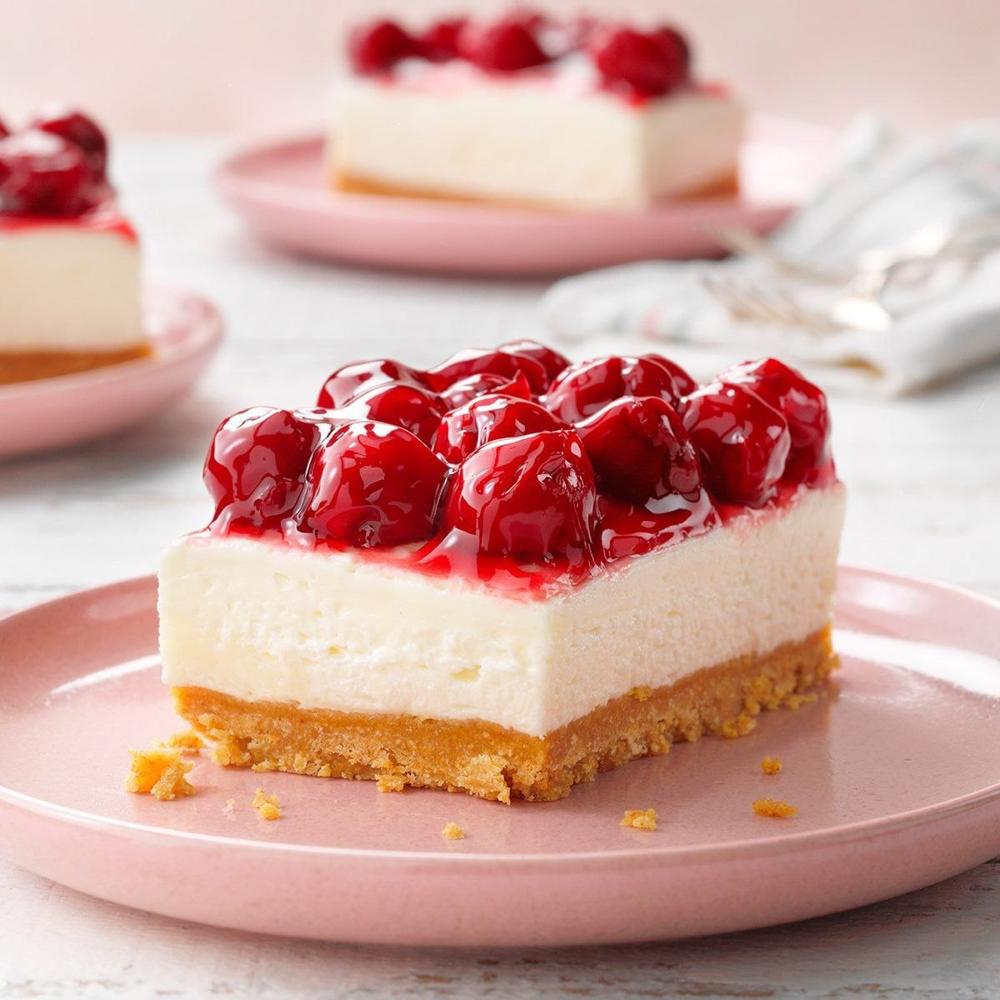

Strawberry Cheesecake

Ingredients
- Cream Cheese
- Sugar
- Biscuits
- Butter
- Strawberries
instruction
- Crush the biscuits and mix them with melted butter.
- Press the mixture into the bottom of a cake pan to form the crust.
- Beat cream cheese with sugar and vanilla until smooth.
- Add heavy cream and mix well until creamy.
- Pour the mixture over the biscuit crust.
- Refrigerate for 4–6 hours until set.
- Top with strawberry sauce before serving.
nutritional facts
| nutrient | amount |
|---|---|
| Biscuits | 200 g |
| Melted Butter | 100 g |
| Cream Cheese | 400 g |
| Sugar | 1/2 cup |
| Vanilla Extract | 1 tsp |
| Heavy Cream | 1 cup |
| Strawberry Sauce | 1/2 cup |